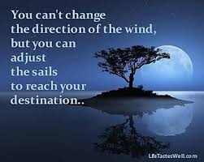

When you look at your life, you have to understand that you must take all the responsibility for where you are right now. Your current situation is the product of your thoughts and actions up to this point. When you find yourself unhappy with the way things are going in your life it may be time to make a change. You can’t change the direction of the wind but you can change the way you face it and deal with it. The situation does not go away because you don’t look at it. Look at what you want to change in your life and begin by finding a change within yourself in how you look at it, how you approach it. The situation, just like the sails of a boat shift against the wind, will have no choice but to also alter and change with you. Change is hard. It’s even harder when it’s a big change — breaking up with someone you love, leaving your old job, starting your own business, or hundreds of other difficult choices.
If your parents decide to move from your old place to new one and you are totally mad about it because you will be going away from your friends, memories to a completely new place. Instead of hating your parents for that or keeping bad attitude "Thomas S. Monson" suggest to adjust your attitude and deal with it! We cannot direct the winds but we can adjust our sails. Think about this for a minute. It has so many applications to our lives, whether we are depressed or not. The underlying message is that many things happen in our lives that we might not prefer and that we cannot avoid or change. The “winds” here represent the external influences, other people, mother nature, and what life throws at you. Sometimes it’s a loss of a loved one or a job, an illness, or when things just don’t go your way. They all can have a powerful impact and contribute to the course of our lives. Sometimes we can’t do anything about the wind, these forces in life, other than adapt to them and adjust our approach. A strong wind comes, or changes direction, and our best response is to tinker with the sails to avoid sinking our boat. When things happen that are challenges in life, we can take steps and “adjust our sails” to modify the circumstances in our own behalf or better cope with them. A reader wrote in to remind us that we can have hurricanes in our lives, and our sails get tattered and torn. Yet somehow he or she is still here to demonstrate her resilience. Overall we must try to be flexible in life, constantly adjusting ourselves and our path in response to the world.
All of us have a specific goal in our life. And to achieve that destination, we work hard. However, sometimes, we fail to reach our desired destination. Well, we face numerous issues and go through several hardships to achieve our desired goal. Most of the time, the reasons for our failure are some of the unwanted situations. Well, we can understand you don’t have control over the situation. But the best thing that you can do is to adjust your approach a bit. However, you have to make sure that your method compatible with the situation. Or else, there is a chance that you will fail. Maybe, it will take a bit of time, but you will reach up to your destination. Also, there is a possibility that you will fail again. But, one thing you have to make sure that you cannot stop. Once you stop, everything will be over. Therefore, keep on trying again and again till you reach your destination. And one day, you will find out that you are standing in your destination. And during that time, you will be the happiest person.